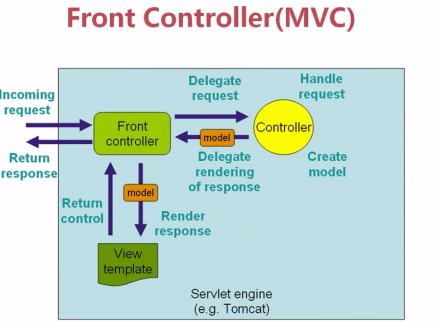
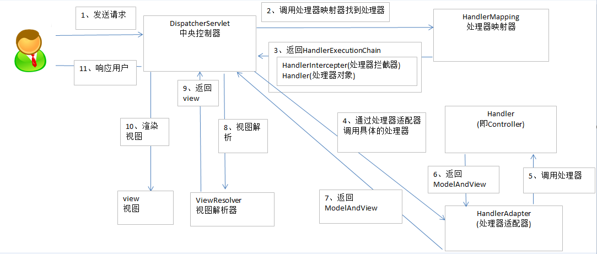

1.Spring之初识Spring MVC
准备学习以及总结Spring的常规用法，大致看了看，感觉没啥难度。Back in Black!

Spring 框架就像一个家族，有众多衍生产品例如 boot、security、jpa等等。但他们的基础都是Spring 的 IOC和AOP ioc 提供了依赖注入的容器 aop ，解决了面向横切面的编程，然后在此两者的基础上实现了其他延伸产品的高级功能。
MVC
Spring(Model-View-Controller)是基于 Servlet 的一个 MVC 框架
- Model(模型层，业务数据的信息表示，关注支撑业务的信息构成，通常是多个实体业务的组合)
- View(视图层，为用户提供数据的呈现)
- Controller(调用业务逻辑产生合适的Model)传递数据给视图层用于呈现

总结：其实Controller就是负责业务数据的抽取，View template就负责页面的呈现，Front-controller负责分发调度
MVC架构的本质是：
程序分层，分工合作，独立协同工作；MVC的核心思想是业务数据的抽取同业务逻辑相分离。
Spring MVC 流程架构图

DispatcherServlet : DispatcherServlet就是一个前端控制器，浏览器的请求通过DispatcherServlet分发，到达合适的Controller来生成所需要的业务数据Model，Model再通过DispatcherServlet传递给View，进行页面的渲染。
HandlerAdapter : 采用适配器模式，将各种不同类型的Handler适配成DispatcherServlet 可以使用的类，DispatcherServlet内部使用的一个类。其实就是Controller的一个表现形式，
HandlerInterceptor : 在需要被拦截的两侧加入一些措施，是一个接口，在调用Controller之前，调用之后，以及model发送到view做一些操作
HandlerMapping : 帮助DispatcherServlet 请求到来之后，哪一个Controller来处理这个请求
HandlerExecutionChain : HandlerMapping返回的东西有HandlerInterceptor和HandlerAdapter，他们之间构成一个执行链条。
preHandle -> ControllerMethod -> postHandle -> afterCompletion
用到了java的反射机制实现的
ModelAndView：当控制器处理完请求时，通常会将包含视图名称或视图对象以及一些模型属性的ModelAndView对象返回到DispatcherServlet。
因此，经常需要在控制器中构造ModelAndView对象，当然也可以用Map和Model的数据形式，但是最后都会转换为ModelAndView。是MVC层，Model的具体表现。ViewResolver： 视图解析器，帮助DispatcherServlet来解决什么页面该正确的渲染。